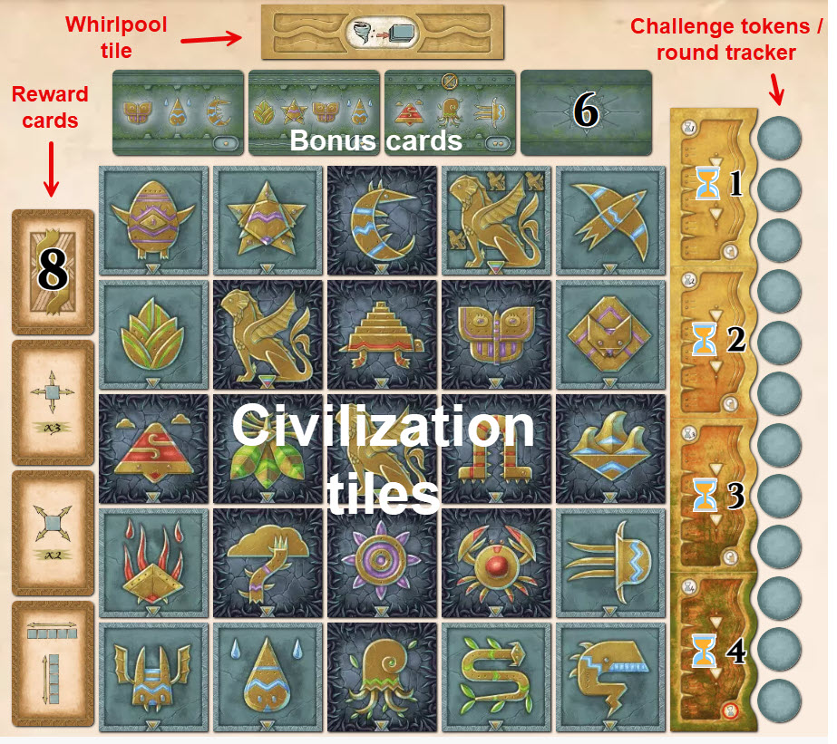

Sfynx
Board Game Arena 官方规则文档
The Basics and Objective

Objective
Line up the Civilization tiles left to right or top to bottom to match the Riddle cards. Civilization tiles must be on their uncurled (light) side to match the Riddle cards.
You gain a Reward card whenever a Riddle card is completed.
Complete all 9 Riddle cards before the end of 12 rounds to beat the game.
Game Play
Carry out 2 basic and 1 special actions.
Using Reward cards are optional.
Completing a Riddle card does not cost an action.
At the end of a round, a Challenge token is flipped over and its effect applied.